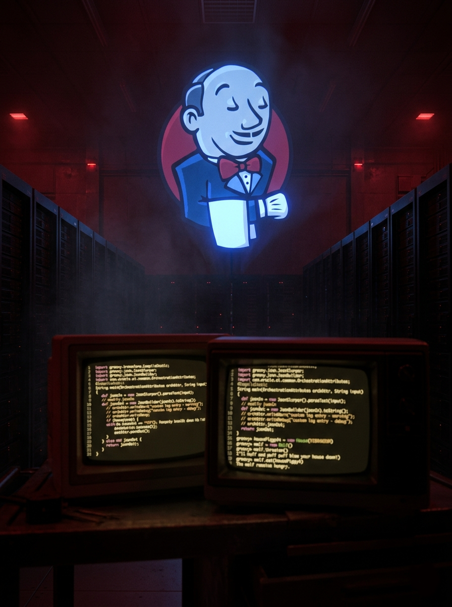

LAB_OPERATIONS
Every box I've rooted, written up the way I wish more writeups were written — the failed paths, the aha moment, the exact payload, the privesc. No hand-waving. If something took me six hours, I say so.
MACHINE: KGF
Full white-box penetration test across two network segments. Multi-stage pivoting via SNMP enumeration, IMAPS credential extraction, R-services lateral movement, and SSH key exfiltration to achieve dual root access.

MACHINE: DEMON
Grey-box engagement: virtual host enumeration, Jenkins default-cred RCE via Groovy console, XLSX hash cracking, rbash escape, and GTFObins scp to root.

MACHINE: BLINDERS
Black-box OSINT engagement: username enumeration, Hydra FTP/SSH brute force, Sherlock Reddit OSINT, credential reuse discovery, and GTFObins ftp shell for root privilege escalation.
NEXT_TARGET
Machine currently in progress. Writeup pending completion.
PENDING
Slot reserved. Machine not yet started.
MACHINE: VULNCMS
Drupalgeddon2 remote code execution against a multi-CMS target, plaintext credential recovery from the web root, and journalctl GTFOBins privilege escalation to root.
SLOT_C
Machine currently in progress. Writeup pending.
SLOT_D
Machine currently in progress. Writeup pending.
SLOT_E
Reserved slot. Fill in machine name, description, and writeup link.
SLOT_F
Reserved slot. Fill in machine name, description, and writeup link.
SLOT_G
Reserved slot. Fill in machine name, description, and writeup link.
SLOT_H
Reserved slot. Fill in machine name, description, and writeup link.
SLOT_I
Reserved slot. Fill in machine name, description, and writeup link.
SLOT_J
Reserved slot. Fill in machine name, description, and writeup link.
SLOT_K
Reserved slot. Fill in machine name, description, and writeup link.
SLOT_L
Reserved slot. Fill in machine name, description, and writeup link.